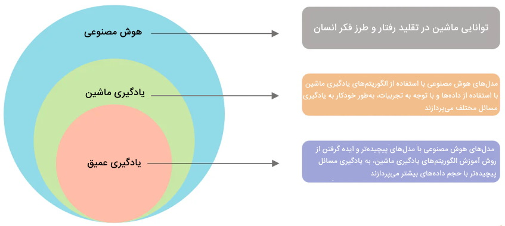
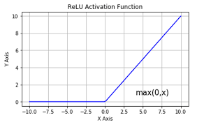
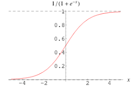
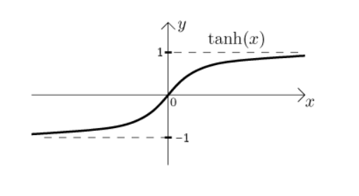
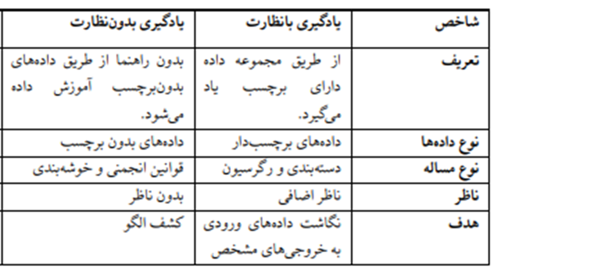
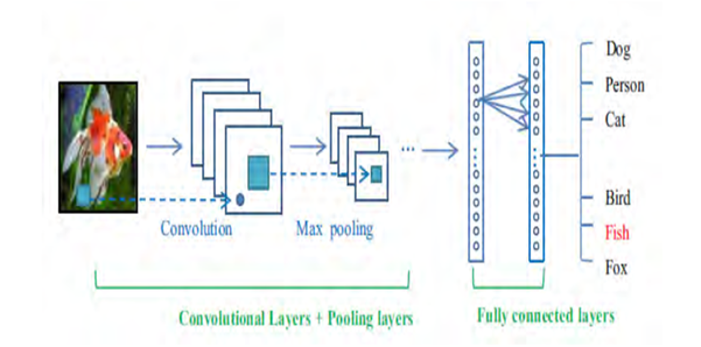
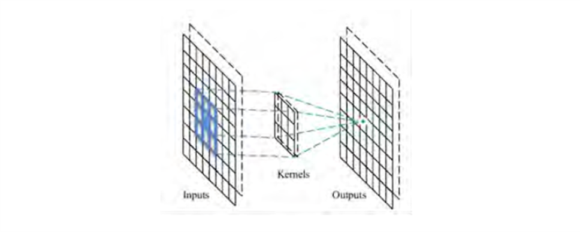

بررسی الگوریتم های یادگیری عمیق برای بازیابی تصویر
تعریف بازیابی تصویر
بازیابی تصویر یعنی جستجو، کاوش و بازیابی تصاویر از یک پایگاه داده بزرگ دیجیتال. در بازیابی تصویر، تعدادی تصویر با خصوصیات مشابه از پایگاه داده انتخاب میشود و شبیهترین آن ها برای کاربر بازیابی میشود.

کاربرد بازیابی تصویر
امروزه استفاده ی وسیع از اینترنت، مجموعهای از رسانه را به وجود آورده است. هر کاربر محتوای زیادی را به اشتراک میگذارد و اطلاعات خود و مخصوصا تصاویر را بازیابی میکند. همچنین در پی افزایش کاربران آنلاین اینترنت، مقدار تصاویر دیجیتال رو به افزایش است.در نتیجه نیاز به الگوریتم هایی برای ذخیره و بازیابی سریع تصاویر احساس میشود.
- کاربردهای فردی
- پزشکی
- تشخیص اثر انگشت
- پیش گیری از وقوع جرم
- کتابخانه های دیجیتال
- تنوع زیستی
بازیابی تصویر به سه صورت کلی انجام میشود:
بازیابی تصویر توصیفی(روش سنتی):
بازیابی با تفسیرهای متنی از پیش نوشتهشده برای تصاویر؛ مانند عنوان، اندازه،زمان ثبت شدن، مالک تصویر، کلمات کلیدی، برچسبها و...
تصاویر توسط متادادههای متنی مثل کلمات کلیدی، عنوان، برچسبها و... تفسیر یا به اصطلاح حاشیه نویسی میشدند. این کار به صورت دستی و توسط نیروی انسانی انجام میشدند.

مزایا و معایب
مزیت
پیادهسازی راحت و بازیابی سریع
معایب
۱. اضافهکردن دستی حاشیه نویسی برای پایگاهدادههای بزرگ کار سختی است.
۲. تصاویری که محتوای زیادی دارند، نیاز به توضیح بیشتری دارند
۳.دقیق نبودن حاشیه نویسی دستی و امکان تفسیر شدن غلط یک تصویر
ویژگیهای تصویر
ویژگی، یک مشخصه بصری از تصویر است که می تواند از از رنگ، بافت، شکل یا لبههای تصویر استخراج بشود. در واقع، استخراج ویژگی، فرایند تبدیل مقدارهای خام پیکسلهای یک تصویر به اطلاعات مفید و معنادار است. در گذشته، طراحی این فرایند توسط متخصصان این حوزه انجام میشد و باید ویژگیها را به صورت دستی تعریف و استخراج میکردیم ولی امروزه با کمک شبکههای عصبی و یادگیری عمیق، این عمل به صورت خودکار در لایههای کانولوشنی شبکههای عصبی انجام میشود.
انواع ویژگی
۱. ویژگی های سراسری
این ویژگیها را میتونیم از تصویر خام، در گام اول پردازش تصویر استخراج کنیم. آنها معمولا نسبت به مواردی همچون تغییر زاویه نور پایدار نیستن. در بازیابی تصویر از این ویژگیها برای «شناسایی اشیاء» ( بررسی حضور یا عدم حضور یک شی خاص در تصویر) استفاده میشه. البته صرفا استفاده از این ویژگیها برای دریافت محتوا و معنای یک تصویر کافی نیست.
۲. ویژگی های محلی
بعد از استخراج ویژگیهای سراسری و شناسایی قسمتی از تصویر که احتمال حضور یک شی در اون وجود داره، تشکیل کادرهای منطقه مشخص شده ، با تقسیم آن بخشها، به بلوکهایی کوچکتر، به بررسی جزئیتر ویژگیها در هر یک از بلوکها میپردازیم تا ماهیت آن شی تشخیص داده بشه. استخراج این ویژگیها، برای توصیف محتوای تصویر ضروری است.
تعریف یادگیری عمیق
شبکه های عصبی
کلمه عصبی در شبکه های عصبی عمیق مربوط به بیولوژی میشود. در واقع، روح این شبکه ها، همانند آنچه که در سیستمهای عصبی روی میدهد میباشد.
یک یاخته عصبی بیولوژیکی از سه بخش تشکیل شده است:
دندریت: این قسمت به عنوان ورودی یک یاخته از یاخته دیگر محسوب میشود
آکسون: این قسمت اطلاعات را از یک یاخته به یاخته دیگر انتقال میدهد.
ارتباط سیناپتیک: این قسمت به عنوان رابط بین دو یاخته عصبی عمل میکند. اگر شدت سیگنال دریافتی از آستانه معینی فراتر باشد، سبب فعال شدن یاخته دیگر میشود.
تابع فعال ساز
شبکه های عصبی یک تکنیک ماشین لرنینگ است که از سیستم عصبی انسان الهام گرفته است و به ساختار مغز انسان شباهت دارد. شبکه های عصبی دارای واحد های پردازشی است که از لایه های ورودی ، پنهان و خروجی تشکیل شده است . گره های موجود در هر لایه به گره های لایه های مجاور متصل هستند. هر اتصال دارای یک ارزش وزنی است. هر گره در وزن متعلق به خودش ضرب می شود و سپس مقادیر به دست امده از گره های هر لایه با هم جمع می شوند.در ادامه به مجموع به دست آمده یک تابع فعال ساز هم اعمال می شود .
که در بیشتر موارد از توابعtanh, sigmoid , ReLu استفاده می شود.
تابع ReLU
تابع sigmoid
تابع tanh
انواع یادگیری شبکه های عصبی
یادگیری شبکه های عصبی به سه دسته تقسیم می شود:
۱. با نظارت
۲. بدون نظارت
۳. نیمه نظارتی
برای یادگیری بانظارت از داده های دارای برچسب استفاده می شود درحالی که برای یادگیری بدون نظارت مجموعه داده ها دارای برچسب نیستند در نتیجه یادگیری بر اساس بازخورد نیست. در یادگیری بدون نظارت، شبکههای عصبی با استفاده از مدلهای مولد مانند RDBM پیش آموزش داده میشوند و بعداً استفاده از الگوریتمهای یادگیری نظارتشده آن هارا دقیق تر کرد. سپس در مجموعه داده های تست برای تعیین الگو یا طبقه بندی استفاده می شود. دادههای بزرگ با حجم بسیار زیاد و تنوع دادهها، زمینه را برای یادگیری عمیق بیشتر کرده است. هیچ دلیل محکمی برای اینکه یادگیری با نظارت بهتر است یا بدون نظارت وجود ندارد هر دو مزایا و موارد استفاده خود را دارند در جدول ۱- ۱ این دو با هم مقایسه شده است . لگوریتم براساس ترکیبی از دادههای برچسبدار و بدون برچسب آموزش داده میشود. بهطور معمول، این ترکیب مقدار بسیار کمی از دادههای برچسبدار و مقدار بسیار زیادی از دادههای بدون برچسب را شامل خواهد بود. در یادگیری نیمهنظارتی روش اصلی این است که ابتدا دادههای مشابه با استفاده از الگوریتم یادگیری بدون ناظر خوشهبندی (Clustering) میشود و سپس از دادههای دارای برچسب موجود برای برچسبگذاری به باقی دادههای بدون برچسب استفاده می شود. میتوان با استفاده از الگوریتمهای یادگیری نظارتشده آن هارا دقیق تر کرد. سپس در مجموعه داده های تست برای تعیین الگو یا طبقه بندی استفاده می شود. دادههای بزرگ با حجم بسیار زیاد و تنوع دادهها، زمینه را برای یادگیری عمیق بیشتر کرده است. هیچ دلیل محکمی برای اینکه یادگیری با نظارت بهتر است یا بدون نظارت وجود ندارد هر دو مزایا و موارد استفاده خود را دارند در جدول ۱- ۱ این دو با هم مقایسه شده است . لگوریتم براساس ترکیبی از دادههای برچسبدار و بدون برچسب آموزش داده میشود. بهطور معمول، این ترکیب مقدار بسیار کمی از دادههای برچسبدار و مقدار بسیار زیادی از دادههای بدون برچسب را شامل خواهد بود. در یادگیری نیمهنظارتی روش اصلی این است که ابتدا دادههای مشابه با استفاده از الگوریتم یادگیری بدون ناظر خوشهبندی (Clustering) میشود و سپس از دادههای دارای برچسب موجود برای برچسبگذاری به باقی دادههای بدون برچسب استفاده می شود.
داده های آموزشی، آزمایشی و اعتبارسنجی
مجموعه آموزشی: بهطور معمول بزرگترین در بین این سه دسته دادهها میباشد و برای یافتن پارامترهای مدل مورد استفاده قرار میگیرد. مجموعه داده آموزشی رابطه اساسی بین دادهها و برچسبهای آن را به بهترین وجهذممکن توضیح میدهد.
مجموعه آزمایشی: اندازهگیری عملکرد یک مدل را براساس توانایی مدل در پیشبینی داده هایی که در فرآیند یادگیری نقشی نداشته میسنجند، مجموعه آزمایشی همان دادههای دیده نشده در فرآیند یادگیری هستند. این مجموعه کارایی مدل نهایی را میسنجد.
مجموعه اعتبارسنجی: در ارزیابی انواع مختلف مد لها و الگوریتمها برای مسئله مورد نظر از مجموعه اعتبارسنجی استفاده میشود. از این دادهها برای تنظیم ابرپارامترها و جلوگیری از بیشبرازش مدل استفاده تا بهترین مدل انتخاب شود.
شبکه های عصبی کانولوشن
شبکهی عصبی کانولوشن ) CNN ( یکی از مهمترین روشهای یادگیری عمیق است که لایههای متعدد در آن به شیوهای جدید و مستحکم آموزش میبینند. این روش موثر واقع شده و به صورت رایج در کاربردهای بینایی ماشین استفاده میشود. این شبکهها زیرمجموعهای از شبکههای عصبی چند لایه هستند که برای داده های دوبعدی مانند تصویر و ویدیو طراحی شده اند. بخشهای مختلف تصویر به عنوان ورودی به لایه های سلسله مراتبی داده میشوند و در هر لایه با اعمال فیلترهایی دیجیتال، ویژگیهای چشمگیری از تصویر استخراج میشود 9[. به طور کلی [ CNN از سه نوع لایه ی اصلی کانولوشن، ادغام 7 و لایه ی تماما متصل 8 تشکیل میشود. در شکل ۳-۱ شمای کلی یک شبکه عصبی کانولوشن را مشاهده میکنید.
چندین لایهی کانولوشن وجود دارد. در این لایه ها تصویر ورودی با فیلترهایی که ضرایب آنها قابل CNN در هر معماری آموزش است، کانوال میشود این فیلترها روی تصویر حرکت داده میشوند. عمق فیلتر با عمق عکس برابر است. به ازای هر صفحهی ویژگی به وجود میآید. وزنهای n ، فیلتر استفاده کنیم n فیلتر مجزا، یک صفحهی ویژگی ایجاد میشود. اگر از نامیده میشوند قابل آموزش هستند و در طول آموزش شبکه مرتبا بروز میشوند. بعد از عمل کانوالو w هر فیلتر که 3* حاصل با یک عدد بایاس جمع شده و در صفحهی ویژگی ذخیره میشود. به عنوان مثال اندازهی فیلترها میتواند 3 باشد. درشکل 2 لایهی کانولوشن را مشاهده میکنید.
در صورت تمایل می توانید کتاب الکترونیکی بررسی الگوریم های یادگیری عمیق برای یادگیری عمیق دانلود نمایید و به مطالب به صورت جامع تری دسترسی داشته باشید